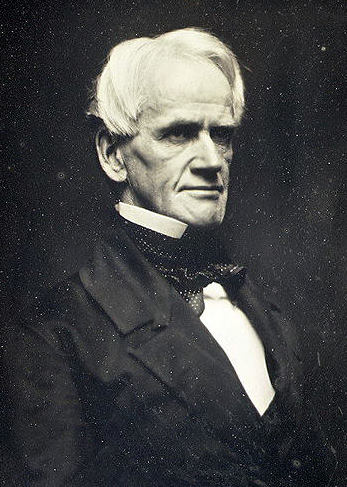

Directions: Read the three passages and the background, then answer the questions.

Background. In Lecture I of his Lectures on Revivals of Religion (1835), Charles Grandison Finney wrote: "Religion is the work of man. It is something for man to do. It consists in obeying God. It is man's duty." And: "A revival is not a miracle. ... I said that a revival is the result of the right use of the appropriate means." Source: Finney, Lectures on Revivals of Religion, Lecture I (first edition, Leavitt, Lord & Co., New York, 1835). In his Twelfth Annual Report (1848), Horace Mann wrote of education: "It does better than to disarm the poor of their hostility towards the rich: it prevents being poor." Source: Mann, Twelfth Annual Report, 1848, as printed in Life and Works of Horace Mann, vol. 4 (Boston: Lee and Shepard, 1891). In her Memorial to the Legislature of Massachusetts (January 1843), Dorothea Dix wrote: "I proceed, Gentlemen, briefly to call your attention to the present state of Insane Persons confined within this Commonwealth, in cages, closets, cellars, stalls, pens! Chained, naked, beaten with rods, and lashed into obedience!" Source: Dix, Memorial to the Legislature of Massachusetts, 1843, in the transcription carried by the Bill of Rights Institute. In the same years, the American Temperance Society, founded in 1826, spread a signed pledge against drink, and Finney organized his Rochester converts of 1830 and 1831 into temperance, moral reform, and antislavery societies.
1. Using Finney's first passage, state what religion is, in his own sequence of sentences.
2. Using Finney's second passage, state what a revival is not, what it is the result of, and what that teaching required a church to do instead of waiting.
3. Using Dix's passage, state the places where she says the insane were confined and the treatment she names, and the body she is asking to act.
4. A classmate says the reformers of these years only preached at individual sinners and never built anything. Answer with Mann's sentence and the background's record of the temperance pledge and Finney's societies, with dates.
1. Finney on religion. Religion is the work of man. It is something for man to do. It consists in obeying God. It is man's duty. The sequence is the doctrine: because religion is work assigned to a human agent, conversion cannot be a fate that arrives or fails to arrive on its own, and the sinner's will is the instrument the whole lesson turns on. (Blueprint 11)
2. Finney on revival. A revival is not a miracle. It is the result of the right use of the appropriate means. The teaching therefore required a church to work rather than wait: to hold the meetings, preach for a decision, and pray with sinners by name, the new measures of the Rochester meetings of 1830 and 1831, on the same reasoning by which a farmer sows rather than waiting for a crop. (Blueprint 11)
3. Dix's record and her audience. The insane of the Commonwealth were confined in cages, closets, cellars, stalls, and pens, chained, naked, beaten with rods, and lashed into obedience. The body she is asking to act is the Legislature of Massachusetts, addressed as "Gentlemen" in the passage and named in the Memorial's title; the enlarged asylum at Worcester was its first answer. (Blueprint 12)
4. Preaching and building. The record runs the other way. Mann's sentence states a building claim, not a sermon point: education, carried in tax supported common schools, does better than disarming the poor of their hostility toward the rich, because it prevents being poor, the argument of the Twelfth Annual Report of 1848. The American Temperance Society, founded in 1826, built a national organization on the signed pledge, which hardened through the 1830s into total abstinence and by the 1840s into campaigns for prohibition by law. And Finney himself organized the converts of his Rochester meetings of 1830 and 1831 into temperance, moral reform, and antislavery societies. The revival's preaching produced organizations, and the organizations produced schools, pledges, petitions, and statutes. (Blueprint 12)
Teacher note. This check is formative. Question 2 is the diagnostic for the lesson's central doctrine: students who describe a revival as a wonder sent to a passive church should be sent back to Station 1 of the activity before the writing task. Question 4 predicts success on the writing task, because it requires the teaching and the building held in one answer.